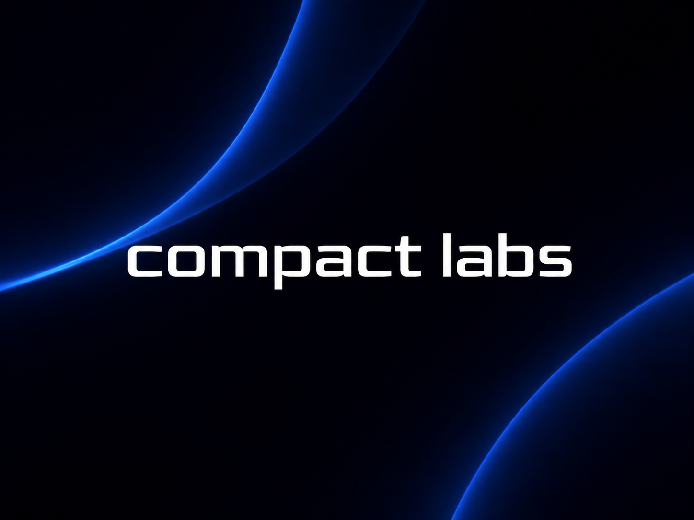

←︎ BACK TO RIGHT NOW
←︎ BACK TO RIGHT NOW

Compact Labs
Overview
Working on sovereign AI at an early-stage startup.
What I Do
- Research the policy and societal implications of AI infrastructure
- Translate technical work on sovereign AI into public-facing communications
- Help shape the company’s public voice on ethical AI
Why It Matters to Me
I met the founder at the TKS Moonshot Hackathon, where my team presented Ferra Labs and won the Innovation Award. A few meetings later, he offered me an internship.
I said yes because Tallied is a civic tool for Canadian voters, but it runs entirely on foreign infrastructure. Foreign models, foreign servers, foreign decisions about what my tool could and couldn’t say.
That didn’t sit well with me, because if we don’t own the systems shaping our economies, information, and democracy, we don’t own our society.
Sovereign AI is the same question I’ve been asking my whole portfolio: who does tech serve? Just one layer deeper.